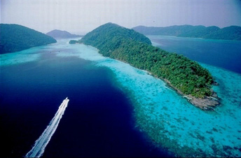

 |
| อันดับ 10 : อุทยานแห่งชาติหมู่เกาะสุรินทร์ จังหวัดพังงา
ประกอบด้วยเกาะสำคัญ 5 เกาะ คือ เกาะสุรินทร์เหนือ เกาะสุรินทร์ใต้ เกาะไข่ (เกาะตอรินลา) เกาะกลาง (เกาะปาจุมบา) และเกาะรี (เกาะสต๊อก) เป็นหมู่เกาะที่มีแนวปะการังน้ำตื้นที่สมบูรณ์สวยงามมาก มีปลาสีสันต่างๆ มากมาย เหมาะสำหรับชมปะการังน้ำตื้น โดยเฉพาะเกาะไข่ ส่วนบริเวณที่เหมาะจะดำน้ำลึก คือ กองหินริเชลิว อยู่ห่างจากเกาะสุรินทร์ไปทางทิศตะวันตกเฉียงใต้ 10 กิโลเมตร เป็นแหล่งที่สมบูรณ์ด้วยธรรมชาติใต้ทะเล มีปลาหลายพันธุ์ ปะการังสีสวย และเป็นจุดที่มีโอกาสพบฉลามวาฬ ที่ได้ชื่อว่าเป็นพี่ใหญ่ใจดีแห่งท้องทะเล ช่วงเวลาที่เหมาะจะเดินทางท่องเที่ยว คือ เดือนพฤศจิกายน ถึง เดือนเมษายน |